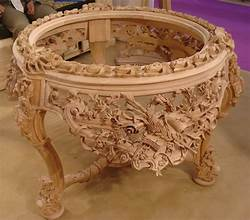
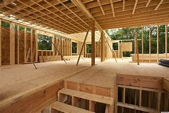

|  |
TABLEAt K & S, we celebrate the timeless beauty and craftsmanship of antique tables. Each piece in our collection tells a story, reflecting the artistry and heritage of its era. Our tables are meticulously curated, showcasing intricate details and unique character that enhance any space. We believe that an antique table is more than just furniture; it's a conversation starter, a piece of history, and a cherished addition to your home. Explore our collection and discover the perfect antique table that resonates with your style and adds a touch of history to your home | |
|---|---|---|
STAIRwe elevate spaces with the exquisite charm of antique stair designs. Our collection showcases the artistry and craftsmanship of bygone eras, transforming ordinary staircases into stunning focal points. Our designs marry elegance with functionality, ensuring that each table not only captivates but also serves its purpose in modern living. | ||
CUPBOARDa cupboard is more than just storage; it’s a statement piece that adds character and style to your home. Our expertly crafted cupboards blend functionality with aesthetic appeal, offering designs that suit both modern and traditional spaces. | ||
INTERIARwe transform spaces into reflections of your unique style and personality. Our passionate team of interior designers is dedicated to creating beautifully curated environments that inspire and rejuvenate. |  | |
CONTAINERSwe specialize in innovative and versatile container solutions that cater to a variety of needs. From storage to shipping, our containers are designed to provide durability, efficiency, and style, making them perfect for both personal and commercial use. | ||
DINNING TABLEwe believe that the dining table is the heart of every home—a place where memories are made and stories are shared. Our exquisite collection of dining tables combines style, craftsmanship, and functionality, making them the perfect centerpiece for your gatherings. each table is thoughtfully crafted with high-quality materials and attention to detail. We offer a variety of sizes and finishes to suit any space, ensuring that you find the perfect match for your dining room aesthetic | ||